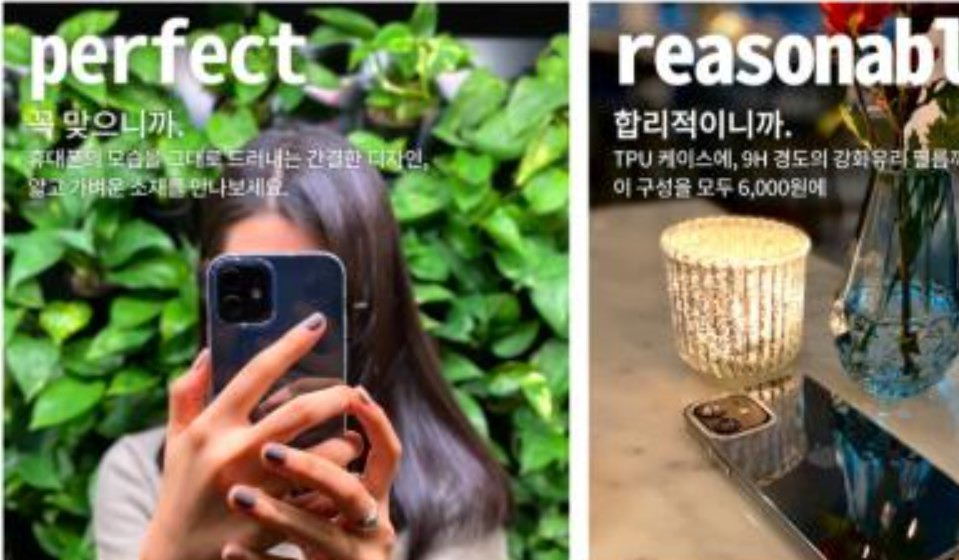

neXT
neXT · Co-founder · Dec 2020 – Jan 2023
Building a direct-to-consumer iPhone accessory brand from zero, with one product that stood out
How three university friends found a gap in a price-war category, built one product around it, and ran the whole business ourselves.

neXT in short
3co-founders, all still at university
1original case design that carried the business
2+ yearsrun alongside university
DTC → dropshippingbusiness model change that removed inventory risk
Revenue figures are not shown.
- Role
- Co-founder
- Team
- 3 co-founders
- Category
- iPhone cases and accessories
- Model
- Direct-to-consumer, then dropshipping
neXT was a direct-to-consumer Apple accessory brand I co-founded with two friends while still at university.
The situation and the challenge
Phone cases are a category where products are nearly identical across sellers, so competition usually collapses on price. We had no brand, no funding and no team beyond the three of us, and we were still at university.
Who was involved
Two co-foundersManufacturing partners in ChinaCustomersOnline marketplaces
What I did
- Dec 2020Co-founded neXT with two university friends
- ProductDesigned one original case; sourced factories in China
- GrowthSold direct to consumers; answered every message
- By Jan 2023Moved the business to dropshipping
- Found a gap in the market and built one product around it: an original iPhone case, thin and designed to look good, with unique selling points in a category where most cases look the same.
- Led product design, material and manufacturing sourcing, marketing and QA, working directly with factories in China on the case body.
- Answered every customer message myself, which fed straight back into the product and the marketing.
- Moved the business to dropshipping, removing inventory risk.
Key decisions
- Bet on one distinctive product instead of a wide catalog.With no budget to compete on price or range, a single product people could tell apart was the only way to stand out.
- Switch to dropshipping.Stock tied up cash and carried the risk of unsold inventory. Dropshipping let us keep selling without that risk.
- Handle customer messages ourselves.It was the fastest way to learn what buyers cared about, and it shaped how we described the product.
Results
0 → 1brand built by a team of three
1original case design that carried the business
2+ yearsrun alongside university
- The original case became our best-selling product and carried the business.
- Built the brand from nothing with two friends, covering design, sourcing, marketing, QA and customer service ourselves.
Revenue figures are not shown.
What I took from it
In a category where everything looks the same, one clear difference does more than a bigger catalog. It is also where I learned to run every part of a product myself, from the factory to the customer's inbox.